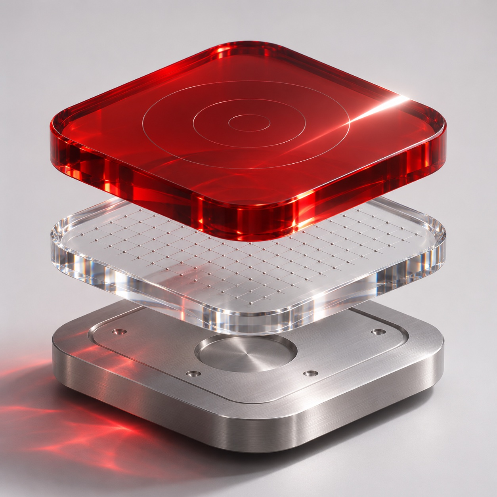

让运维人员更快
找到异常电芯
原先，运维人员要从一张表格里筛出异常电芯。我和算法同事一起梳理了健康评分与风险等级，将列表改为按仓位和风险等级查看，再把异常记录接到对应工单，方便追踪派单进度。
改版前
约 2 小时
上线后
约 15 分钟

原先，运维人员要从一张表格里筛出异常电芯。我和算法同事一起梳理了健康评分与风险等级，将列表改为按仓位和风险等级查看，再把异常记录接到对应工单，方便追踪派单进度。
我为客服问答助手设计首帖回复流程，用官网 FAQ、支持页、客服模板和内部文档提供回答依据。回复能否自动发出，取决于咨询类型。
客服助手的回复规则
用户首次发帖时，助手检索已有知识，为标准化问题生成并发送答复。
助手提供草稿，由客服核实情况、调整措辞并发送，保留人工决策环节。
业务团队要看订单趋势，中台团队要按通道、国家和支付方式排查问题。我为看板定义了五种计算口径，让读数的人知道每个比例回答什么问题。
查看指标口径
成功订单包括普通、试用和订阅订单。此口径把尚未完成的支付也计入分母。
只看已经有明确结果的支付。成功订单仍按普通、试用和订阅三类合计。
从被风控拒绝的订单中扣除欺诈订单，再计算挽回比例。
在应当延后扣款的订单中，有多少最终扣款成功。
以试用结束后应扣款的订单为基数，观察实际扣款结果。
EXPERIENCE
从云节点部署，到储能场站的运维工具，再到跨境支付和 AI 问答。
AI 产品经理
设计客服问答与人工接管流程、支付法律问答评测方案，推进钱包与本地支付接入，定义支付看板指标。
产品工程师 · 南京
参与 Easystorage 储能云平台迭代，与算法团队梳理电芯健康等级，独立设计运维日志录入和回溯查询。
云产品工程师 · 广州
参与 OpenStack 边缘节点部署、网络联调和权限梳理，单站点上线周期在两周内。
产品实习生 · 重庆
走查智慧园区系统的 20 余个流程节点，梳理字段配置和审核流转，参与验收与回归测试。